환경기능사 (2007-04-01 기출문제)
1과목: 대기오염방지
1. 오염물질별 배출관련업종을 연결한 것으로 옳지 않은 것은?
- 아황산가스(SO2) - 황산제조업, 제련소
- 황화수소(H2S) - 석탄건류, 가스공업
- 이황화탄소(CS2) - 세라믹 제조공업, 도금공장
- 질소산화물(NOx) - 내연기관, 비료제조 공업
(정답률: 63%)

2. 일반적으로 광원으로부터 나오는 빛을 단색화장치(monochrometer) 또는 필터 (filter)에 의하여 좁은 파장 범위의 빛만을 선택하여 액층을 통과시킨 다음, 광전 측광으로 하여 목적성분의 농도를 정량하는 분석방법은?
- 가스크로마토그래피법
- 흡광광도법
- 원자흡광광도법
- 비분산 적외선분석법
(정답률: 79%)
3. 대기오염방지기술 중 세정집진장치의 처리원리로 가장 거리가 먼 것은?
- 관성충돌
- 확산작용
- 응집작용
- 여과작용
(정답률: 50%)
4. 다음 ( )안에 들어갈 말로 알맞은 것은?
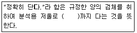
- 0.1g
- 0.01g
- 0.001g
- 0.0001g
(정답률: 55%)
5. 일반식 CmHn인 탄화수소 기체 1Sm3가 연소되는데 필요한 이론공기량(Sm3)은 얼마인가?(오류 신고가 접수된 문제입니다. 반드시 정답과 해설을 확인하시기 바랍니다.)
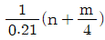
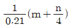
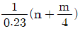
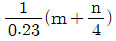
(정답률: 32%)
6. 오존(O3)에 관한 다음 설명 중 옳지 않은 것은?
- 무색, 무취의 산화력이 강한 기체이다.
- 눈 및 호흡기 점막에 강한 자극을 주며, 고무를 쉽게 노화시킨다.
- 살균 및 탈취작용을 한다.
- 태양으로부터 복사되는 유해 자외선을 차단하여 지표 생물권을 보호해 주는 역할을 한다.
(정답률: 53%)
7. 대기조건 중 고도가 높아질수록 기온이 증가하여 수직온도차에 의한 혼합이 이루어지지 않는 상태는?
- 과단열 상태
- 중립 상태
- 역전 상태
- 등온 상태
(정답률: 76%)
8. 표준상태에서 물 5g을 수증기로 만들 때, 부피는 얼마인가?
- 5.22L
- 6.22L
- 7.22L
- 8.22L
(정답률: 60%)
9. 다음은 어떤 오염물질에 관한 설명인가?
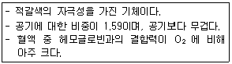
- 아황산가스
- 이산화질소
- 염화수소
- 일산화탄소
(정답률: 46%)
10. 함진가스를 방해판에 충돌시켜 기류의 급격한 방향전환을 이용하여 입자를 분리·포집하는 집진장치는?
- 중력 집진장치
- 전기 집진장치
- 여과 집진장치
- 관성력 집진장치
(정답률: 82%)
11. 연소 시 연소상태를 조절하여 질소산화물 발생을 억제하는 방법으로 가장 거리가 먼 것은?
- 저온도 연소
- 저산소 연소
- 수증기 분무
- 공급공기량의 과량 주입
(정답률: 83%)
12. 유해가스 흡수장치의 충전탑(packed tower)에서 충전물이 갖추어야 할 조건으로 적합하지 않은 것은?
- 가벼워야 한다.
- 비표면적이 작아야 한다.
- 마찰저항이 작아야 한다.
- 압력손실이 작아야 한다.
(정답률: 62%)
13. 효율 90%인 전기집진기를 효율 99%가 되도록 개조하고자 한다. 개조 전보다 집진극의 면적을 몇 배로 늘려야 하는 가? (단, Deutsch-Anderson식 적용)
- 2배
- 3배
- 4배
- 9배
(정답률: 39%)
14. 다음 중 대류권에 해당하는 사항으로만 옳게 연결된 것은?
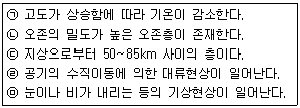
- ㉠, ㉡, ㉢
- ㉡, ㉢, ㉣
- ㉢, ㉣, ㉤
- ㉠, ㉣, ㉤
(정답률: 80%)
15. 집진효율이 50%인 중력침강 집진장치와 99%인 여과식 집진장치가 직렬로 연결된 집진시설에서 중력침강 집진장치의 입구 먼지농도가 1,000 mg/Sm3이라면, 여과식 집진장치의 출구 먼지농도(mg/Sm3)는?
- 1
- 5
- 10
- 50
(정답률: 51%)
2과목: 폐수처리
16. 오염물질과 피해상태의 연결로 가장 거리 먼 것은?
- 페놀 - 냄새
- 인 - 부영양화
- 유기물 - 용존산소 결핍
- 시안 - 골연화증
(정답률: 64%)
17. 50m3/hr의 폐수가 24시간 균일하게 유입되는 폐수처리장의 침전지에서 이 침전지의 월류부하를 100m3/m·day로 할 때 월류웨어의 유효길이는?
- 10m
- 12m
- 15m
- 50m
(정답률: 47%)
18. 하·폐수 처리시설의 일반적인 처리 계통으로 가장 적절한 것은?
- 침사지 - 침전지 - 소독조 - 포기조
- 침사지 - 포기조 - 소독조 - 침전지
- 침전지 - 침사지 - 포기조 - 소독조
- 침사지 - 침전지 - 포기조 - 소독조
(정답률: 45%)
19. 상수처리를 위한 완속식 여과공법에서의 적당한 여과속도는?
- 5m/day
- 15m/day
- 50m/day
- 150m/day
(정답률: 36%)
20. 유입수량이 700m3/day이고, BOD가 1,715mg/L인 하수를 활성슬러지공법으로 처리하고자 할 때, 적당한 포기조의 용적 은? (단, 포기조의 BOD 용적부하는 1.0kg/m3·day이다.)
- 약 2,100 m3
- 약 1,715 m3
- 약 1,200 m3
- 약 700 m3
(정답률: 41%)
21. 산기식 포기방식의 포기조의 운영·관리 사항 중 옳지 않은 것은?
- 활성슬러지의 색에 주의
- 활성슬러지의 냄새에 주의
- 포기상황(포기강도)에 주의
- DO가 7mg/L이상 유지에 주의
(정답률: 53%)
22. 생물학적 원리를 이용하여 영양염류(인 또는 질소)를 효과적으로 제거할 수 있는 공법이라 볼 수 없는 것은?
- M-A/S
- A/O
- Bardenpho
- UCT
(정답률: 66%)
23. 다음은 폐수처리에서 일반적으로 많이 사용되고 있는 무기응집제인 황산알루미늄에 관한 설명이다. 옳지 않은 것은?
- 결정은 부식성이 없어 취급이 용이하다.
- 철염에 비해 적정 pH의 범위가 좁다.
- 저렴하고 무독성으로, 대량주입이 가능하다.
- 철염에 비해 floc이 무거워 침전이 잘된다.
(정답률: 49%)
24. 박테리아에 관한 설명으로 옳지 않은 것은?
- 단세포 미생물로서 용해된 유기물을 섭취한다.
- 막대기모양, 공모양, 나선모양 등이 있다.
- 60%는 수분, 40%는 고형물질로 구성 되어 있다.
- 일반적인 화학조성은 C5H7O2N으로 나타낼 수 있다.
(정답률: 77%)
25. 활성슬러지법으로 처리한 슬러지의 탈수 후 무게가 150kg이고, 항량으로 건조한 후의 무게가 35kg이라면 탈수 후 슬러지의 수분함량(%)은?
- 46.7
- 56.7
- 66.7
- 76.7
(정답률: 54%)
26. 침전지에서 지름이 0.1㎜이고, 비중이 2.65인 모래입자가 침전하는 경우 침전 속도는? (단, Stokes법칙을 적용, 물의 점도 : 0.01g/㎝·sec)
- 0.625㎝/sec
- 0.726㎝/sec
- 0.792㎝/sec
- 0.898㎝/sec
(정답률: 29%)
27. 표준 활성슬러지법으로 폐수를 처리하는 경우 F/M비(kg BOD/kg MLSS·day)의 운전범위로 가장 적절한 것은?
- 0.03~0.06
- 0.2~0.4
- 2~4
- 3~6
(정답률: 72%)
28. 유기물의 호기성 분해 시 최종산물은?
- 물과 이산화탄소
- 일산화탄소와 메탄
- 이산화탄소와 메탄
- 물과 일산화탄소
(정답률: 71%)
29. 다음 중 수처리 시 사용되는 응집제와 거리가 먼 것은?
- PAC
- 소석회
- 입상활성탄
- 염화제2철
(정답률: 76%)
30. 침전지에서 고형물질의 침강속도를 증가시키기 위한 가장 효율적인 조건은?
- 폐수와 고형물질간의 밀도차가 크고, 점성도가 작고, 고형물질의 입자 직경이 클수록 좋다.
- 폐수와 고형물질간의 밀도차가 작고, 점성도가 크고, 고형물질의 입자 직경이 작을수록 좋다.
- 폐수와 고형물질간의 밀도차와는 관계없이 점성도가 크고, 고형물질의 입자 직경이 클수록 좋다.
- 폐수와 고형물질간의 밀도차가 크고, 점성도가 크고, 고형물질의 입자 직경이 작을수록 좋다.
(정답률: 63%)
31. 산도(acidity)나 경도(hardness)는 무엇을 환산하는가?
- 염화칼슘
- 탄산칼슘
- 질산칼슘
- 수산화칼슘
(정답률: 72%)
32. 오존 살균 시 급수계통에서 미생물의 증식을 억제하고, 잔류살균효과를 유지하기 위해 투입하는 제품은?
- 염소
- 활성탄
- 실리카겔
- 활성알루미나
(정답률: 69%)
33. 눈금이 있는 실린더에 슬러지 1L를 담아 30분간 침전시킨 결과 슬러지의 부피가 180mL이었다. 이 슬러지의 SVI는?
- 20
- 50
- 90
- 111
(정답률: 40%)
34. 실험실에서 BOD를 측정할 때 배양조건 으로 옳은 것은?
- 5℃에서 20일 간 배양
- 5℃에서 20번 배양
- 20℃에서 5일 간 배양
- 20℃에서 5번 배양
(정답률: 77%)
35. 펜턴(fenton)화 반응에 대한 설명으로 옳은 것은?
- 황화수소의 난분해성을 유기물질 산화
- 오존의 난분해성 유기물질 산화
- 과산화수소의 난분해성 유기물질 산화
- 아질산의 난분해성 유기물질 산화
(정답률: 59%)
3과목: 폐기물처리
36. ‘퇴비화’반응에 관여하는 인자에 대한 설명 중 옳지 않은 것은?
- 수분함량 : 원료의 최적함수율은 50~60%정도가 적당하다.
- pH : 퇴비화 미생물의 최적 생육 pH는 4.0~6.0이다.
- C/N비 : C/N비가 너무 낮으면 유기질 소의 암모니아화로 악취가 발생한다.
- 입도 : 원료의 입도가 너무 작으면 퇴비 더미 내 공기의 통기성이 좋지 않아 미생물 활성을 저해한다.
(정답률: 54%)
37. 혐기성 소화방법으로 쓰레기를 처분하려고 한다. 원료로 쓰일 수 있는 가스를 많이 얻으려면 다음 중 어떤 성분이 특히 많아야 하는가?
- 질소
- 탄소
- 산소
- 인
(정답률: 59%)
38. ‘반고상폐기물’의 고형물 함량 범위로 알맞은 것은?
- 3% 이상 5% 미만
- 5% 미만
- 5% 이상 15% 미만
- 15% 이상
(정답률: 75%)
39. 폐기물처리에서 ‘파쇄(Shredding)’의 목적과 거리가 먼 것은?
- 부식효과 억제
- 겉보기 비중의 증가
- 특정 성분의 분리
- 고체물질간의 균일혼합효과
(정답률: 59%)
40. 유동층 소각로에 관한 다음 설명 중 옳지 않은 것은?
- 소각로 바닥으로부터 뜨거운 공기 또는 상온의 공기를 송입하여 소각하는 방식이다.
- 가열된 유동층에 소각대상물을 연속적으로 투입함으로써 폐기물을 연소시킨다.
- 유동층의 충진물은 활성이 강하고, 융점이 낮은 것이 좋다.
- 폐기물은 로에 주입하기 전에 파쇄 하여야 한다.
(정답률: 52%)
41. 폐기물 소각로의 설계 기준이 되는 발열량은?
- 고위발열량
- 저위발열량
- 고위발열량과 저위발열량의 산술평균
- 고위발열량과 저위발열량의 기하평균
(정답률: 71%)
42. 폐기물을 압축시킨 결과 용적감소율이 80%였다면, 이 때 압축비는?
- 3
- 4
- 5
- 6
(정답률: 49%)
43. 다음 중 퇴비화 공정에 있어서 분해가 가장 더딘 물질은?
- 아미노산
- 글루코오스
- 탄수화물
- 리그닌
(정답률: 52%)
44. 소각로에서 완전연소를 위한 세 가지 조건(일명 3T)으로 옳은 것은?
- 시간 - 온도 - 혼합
- 시간 - 온도 - 수분
- 혼합 - 수분 - 시간
- 혼합 - 수분 - 온도
(정답률: 75%)
45. 소각능력이 400kg/m2·hr인 화격자 소각로에 유입되는 쓰레기의 양이 15,000kg/day이다. 하루 8시간 소각로를 운전 한다고 할 때 필요한 화격자의 면적은?
- 5.74m2
- 4.69m2
- 4.12m2
- 5.15m2
(정답률: 42%)
46. 폐기물을 가벼운 것과 무거운 것으로 분리하기 위하여 중력이나 탄도학을 이용한 선별 방법은?
- 손 선별
- 스크린 선별
- 자석 선별
- 관성 선별
(정답률: 62%)
47. 500,000명이 거주하는 한 지역에서 1주일 동안 9,000m3의 쓰레기를 수거하였다. 쓰레기의 밀도가 0.5ton/m3이면, 1인 1일 쓰레기 발생량은 얼마인가?
- 1.29kg/인·일
- 1.54kg/인·일
- 1.82kg/인·일
- 1.91kg/인·일
(정답률: 43%)
48. 폐기물을 잘게 부수는 파쇄 장치에 작용 하는 힘에 따라 분류할 때 적당하지 않은 것은?
- 임호프 파쇄기
- 전단식 파쇄기
- 충격식 파쇄기
- 압축식 파쇄기
(정답률: 73%)
49. 다음 그림은 폐기물을 매립한 후 발생하는 생성가스의 농도 변화를 단계적으로 나타낸 것이다. 유기물이 효소에 의해 발효되는 혐기성 비메탄 단계는?
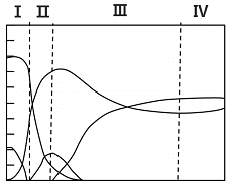
- Ⅰ
- Ⅱ
- Ⅲ
- Ⅳ
(정답률: 73%)
50. 다음 중 적환장의 위치로 적당하지 않은 곳은?
- 수거지역의 무게중심에서 가능한 가까 운 곳
- 주요 간선도로에서 멀리 떨어진 곳
- 작업에 의한 환경피해가 최소인 곳
- 적환장 설치 및 작업이 가장 경제적인 곳
(정답률: 72%)
51. 탄소 1kg이 연소할 때 이론적으로 필요한 산소의 질량은?
- 4.1kg
- 3.6kg
- 3.2kg
- 2.7kg
(정답률: 41%)
52. 유해 폐기물의 물리 화학적 처리방법 중 휘발성 물질을 함유하는 유해 액상폐기 물을 수증기와 압축시켜 휘발성분을 기화시킨 후 분리하는 공정으로, 특히 휘발성 물질이 고농도로 농축된 액상폐기 물의 처리에 가장 적합한 방법은?
- 가압 부상
- 증발 농축
- 공기 탈기
- 증기 탈기
(정답률: 47%)
53. 폐기물 수집을 위한 적환장의 설치 이유로 가장 거리가 먼 것은?
- 작은 용량의 수집차량을 이용할 때
- 불법투기가 발생할 때
- 상업지역의 수거에 대형용기를 사용할 때
- 처분지가 수집 장소로 부터 비교적 멀리 떨어져 있을 때
(정답률: 66%)
54. 슬러지를 농축시킴으로써 얻을 수 있는 이점과 가장 거리가 먼 것은?
- 슬러지 개량에 소요되는 약품비용이 절감된다.
- 후속공정에서 소화조의 부피를 감소시킬 수 있다.
- 슬러지 탈수시설의 규모가 작아지므로 처리비용이 절감된다.
- 소화조 내의 미생물과 양분의 접촉을 억제하여 효율을 증가시킨다.
(정답률: 50%)
55. 슬러지 탈수에 널리 이용되는 방법 중하나로 처음에는 중력에 의해 탈수되다가 룰러에 의해 구동되는 한 개 또는 두개의 탈수성 있는 면 사이의 압력으로 전단 및 압축탈수가 연속적으로 일어나는 형태의 탈수는?
- 가열건조
- 원심분리
- 진공여과
- 벨트프레스
(정답률: 57%)
4과목: 소음 진동학
56. 다음 중 진동의 물리량을 나타내는 진동 가속도레벨(VAL)의 식으로 옳은 것은? (단, a : 측정대상 진동의 가속도 실효치 (m/s2), a0 : 기준진동의 가속도 실효치 ((m/s2))
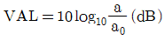
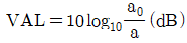
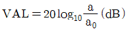
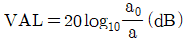
(정답률: 43%)
57. 다음의 조건에 해당되는 방진재로 가장 적합한 것은?
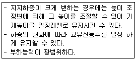
- 공기스프링
- 방진고무
- 금속스프링
- 진동절연
(정답률: 48%)
58. 출력이 0.14watt인 작은 점음원으로부터 65m 떨어진 지점에서의 SPL은 약 몇 dB인가? (단, SPL=PWL-20logr-11)
- 85
- 71
- 63
- 58
(정답률: 43%)
59. 음압이 10배가 되면 음압레벨은 몇 dB 증가하는가?
- 10
- 20
- 30
- 40
(정답률: 55%)
60. 소음의 영향에 관한 설명으로 옳지 않은 것은?
- 노인성 난청은 고주파음(6000Hz)에서 부터 난청이 시작된다.
- 영구적 청력손실은 4000Hz 정도에서 부터 난청이 시작된다.
- 가축의 산란율, 부화율, 우유량 등의 저하를 유발한다.
- 신체적으로 할당도, 혈중 백혈구, 혈중 아드레날린 등을 저하시킨다.
(정답률: 50%)